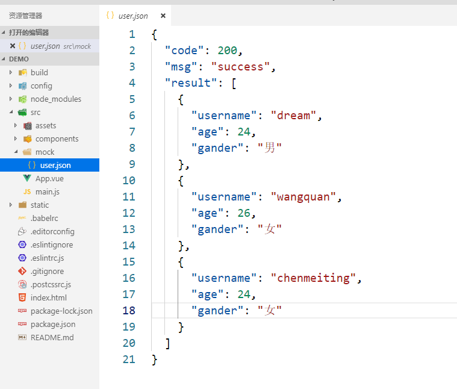
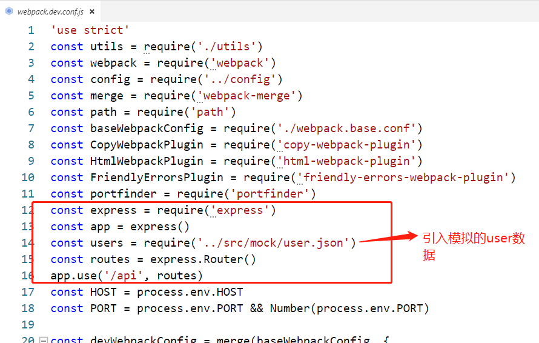
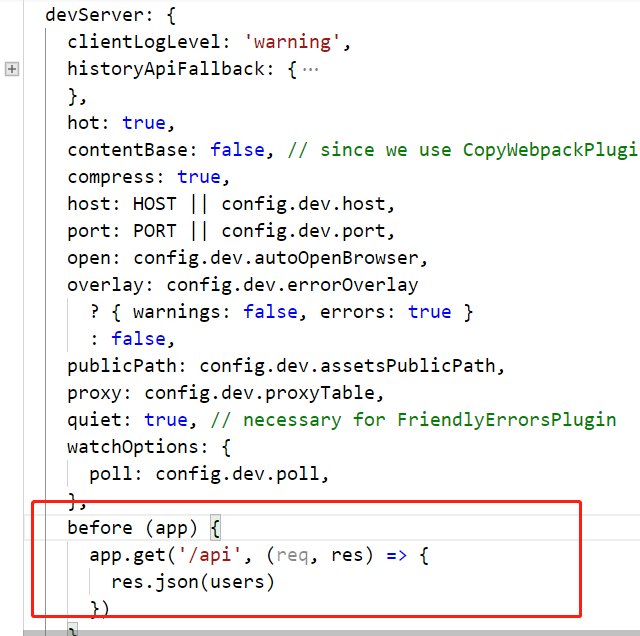
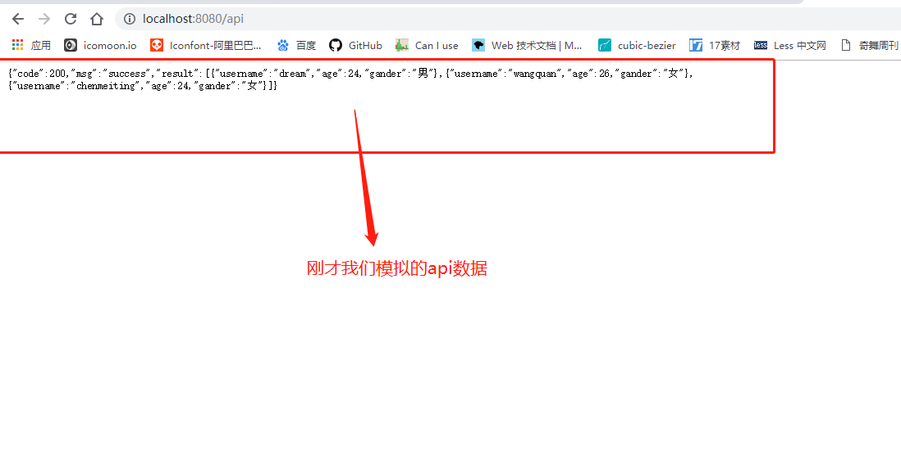
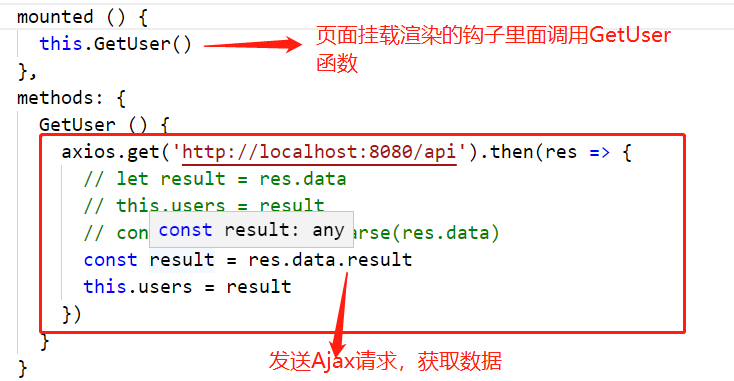
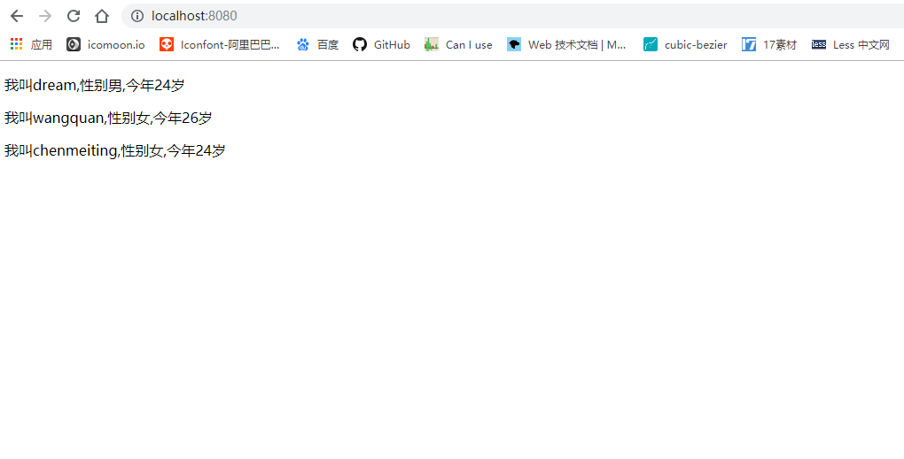

现如今前后端分离开发越来越普遍，前端人员写好页面后可以自己模拟一些数据进行代码测试，这样就不必等后端接口，提高了我们开发效率。今天就来分析下前端常用的mock数据的方式是如何实现的。
项目是基于vue-cli的，首先必须搭建好vue项目环境。如果有同学不知道如何搭建vue项目，可以参考我的另外一篇文章。因为mock数据需要借助node.js中express框架，所以必须先在项目中安装npm install express --save。
搭建完基础后，我们在src文件下创建一个mock文件，用来存放我们模拟数据。因为现在大多后台返回数据类型为json格式，所以我们在mock文件下创建一个user.json文件。

接下来在build文件夹下webpack.dev.conf.js文件中添加以下代码：
const express = require('express')
const app = express()
const users = require('../src/mock/user.json')
const routes = express.Router()
app.use('/api', routes)
然后在devServer添加：
before (app) {
app.get('/api', (req, res) => {
res.json(users)
})
}
完成以上两步之后，我们就可以在网页中看到我们mock的api文件了。 在地址栏输入：http://localhost:8080/api

最后我们只需要发送Ajax请求来获取数据就可以了
npm install axios -S
在App.vue文件中发送Ajax请求获取数据

最后重启项目npm run dev， 可以看到请求的数据已经显示在页面中

本文大体介绍了一些mock数据的使用方法，因为自己也对express框架用法不是很熟，所以在配置的时候没有具体说明每一句代码的作用，如果有同学清楚也可以留言，大家一起交流。
欢迎在GitHub上一起学习前端，分享代码以外的知识技能。
找到我：GitHub